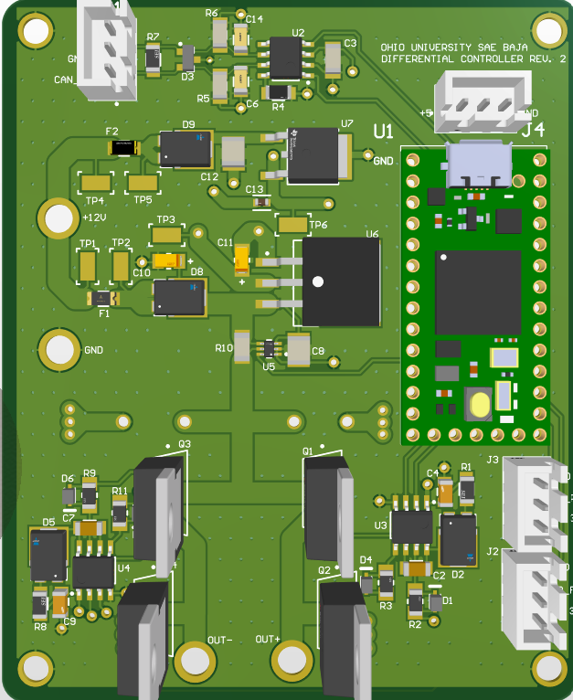
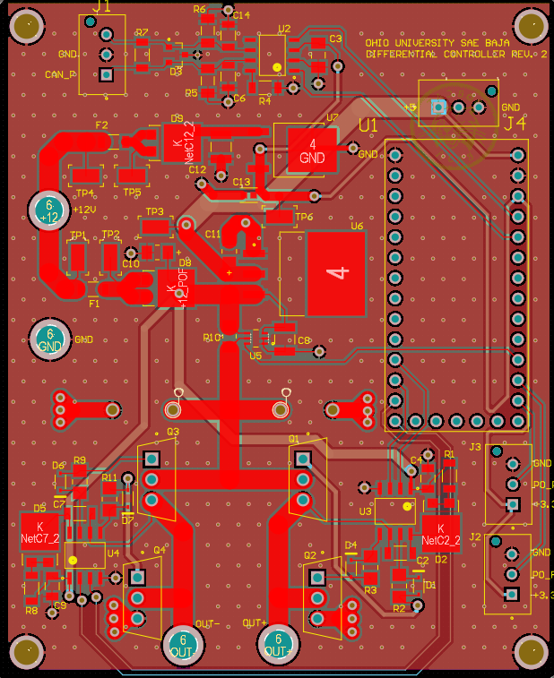
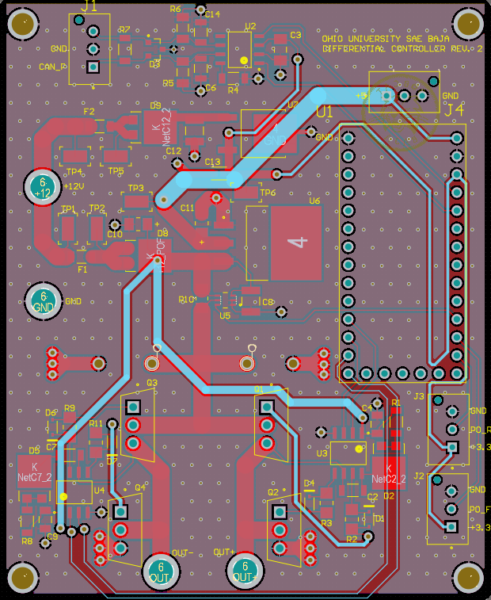

Active Rear Steer
Steers the buggy's rear wheels with a Teensy 4.0, a VNH5019 motor driver and a cascaded PID loop running at up to 1 kHz. Onboard sensors showed a 20% smaller turning radius and an 8% faster lap.
C++ · Teensy 4.0 · CAN · Altium
Rev 2 controller in layout
Rear-steer controller, Rev 2



Rev 2 replaces the VNH5019 module with its own H-bridge: four power FETs, two gate drivers and current sensing on one board.